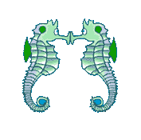
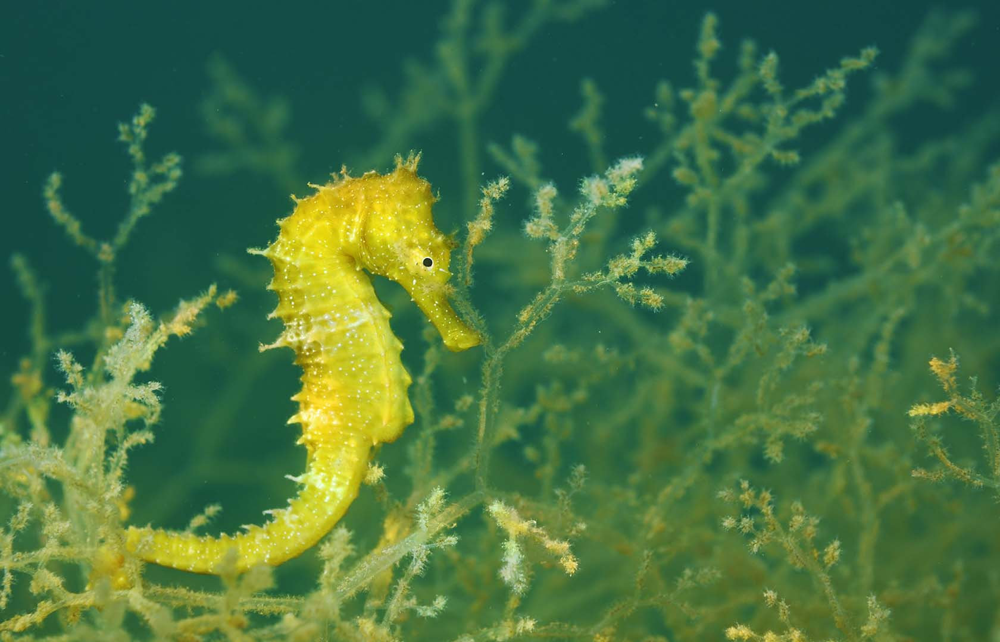

El caballito de mar tiene una forma extraña y nada erguido, parece un pez extraordinario. Sin embargo, más de 45 especies viven en aguas costeras de todo el mundo. Los científicos han estudiado su biología básica, pero aún queda mucho por aprender sobre estos animales carismáticos.
Su cabeza es similar a la de un caballo, pero cada caballito de mar tiene un aspecto propio. La mayoría son manchados, moteados o rayados y algunos están adornados con volantes de piel, puntas y coronas. Los colores varían y pueden cambiar con la contracción de un músculo para camuflarse o para marcar a un enemigo o pareja potencial.
Los caballitos de mar poseen placas óseas cubiertas de carne en lugar de escamas, ojos que funcionan independientemente unos de otros y colas prensiles, que se utilizan para sujetar elementos de sujeción en el lecho marino para evitar la deriva y durante el cortejo, para unirse entre sí.
La especie más pequeña no es más grande que un poroto; el más grande puede alcanzar más de 30 centímetros desde la cabeza hasta la punta de la cola.
| DELFIN |
